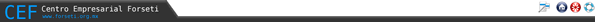
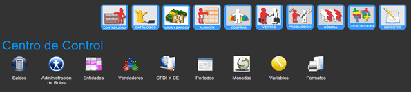

|
El cabecero es un panel estático que nos permite ver la interfaz en la que estamos trabajando, (CEF o SAF) y nos permite realizar tareas tan básicas como la solicitud de inicio o cierre de sesión (botón rojo), la carga general de ayuda de la interfaz (botón de salvavidas), e ir al inicio de la interfaz (botón de casa). El cabecero luce de la siguiente manera:
 figura 1, panel del cabecero
El panel de menú, muestra el sistema de navegación principal y se agrupa en modo similar a un menú de cualquier aplicación. Las interfaces de SAF y CEF, pueden verse como aplicaciones distintas, y sus menús responden a sus propios procesos. Desde aquí, se controlan las entradas a sus módulos respectivos, que a su vez, serán mostrados en los paneles de módulo según la interfaz. La imagen de la figura 2, muestra el árbol del módulo de catálogo de turnos del departamento de nómina.
 figura 2, panel del menú desplegando información de módulos
El panel de la barra de información, nos muestra la fecha, y la hora de la máquina local. Es también en esta barra que se muestra información sobre: Versión, Servidor, Host, Usuario o Cliente y Compañía: - Versión: Es la versión del servidor forseti al que se está conectado. Esta cambia automáticamente cuando se actualiza el servidor a una nueva versión.
- Servidor: Muestra el nombre del servidor, proveedor del sistema Forseti al que se está conectado. Los nombres de los servidores Forseti no son los nombres de dominio, son nombres asignados a gusto del dueño del servidor, como una identificación del proveedor del servicio hacia sus clientes.
- Host: Es el nombre de la máquina, la dirección IPv4 o la dirección IPv6 del PC conectado a Forseti. El host se utiliza para registros de sesión y de procesos en el servidor Forseti, y la seguridad que esto implica para resolver un eventual ataque o falla del servidor.
- Compañía: Al registrarnos, este campo nos muestra la base de datos a la que estamos conectados. solo aplica al CEF.
- Usuario o Cliente: Al igual que la compañía, nos muestra el usuario dado de alta en el CEF o en el SAF, con el que nos estamos conectando.
figura 3, parte del panel de la barra de información
|